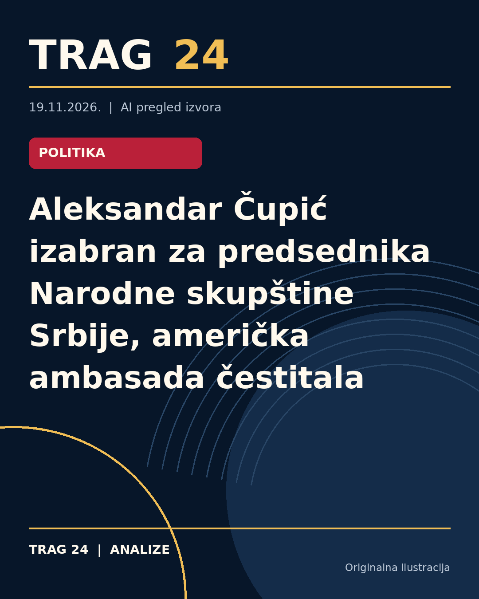

Aleksandar Čupić izabran za predsednika Narodne skupštine Srbije, američka ambasada čestitala

ŠTA SE DOGODILO
Aleksandar Čupić, kandidat Studentske liste, izabran je za predsednika Narodne skupštine Srbije. Za njegov izbor glasalo je 140 poslanika, dok je protivkandidat Stojan Radenović, iz poslaničke grupe „Aleksandar Vučić – Srbija pobeđuje“, dobio podršku 97 poslanika. Američka ambasada u Srbiji javno je čestitala Čupiću na izboru i izrazila želju za uspešnim mandatom i daljom saradnjom sa novim rukovodstvom.
HRONOLOGIJA
Izbor predsednika Skupštine desio se tokom trećeg dana konstitutivne sednice parlamenta. Čupić je izabran na predlog Studentske liste, dok je Radenović bio kandidat poslaničke grupe „Aleksandar Vučić – Srbija pobeđuje“. Čestitke Čupiću uputila je američka ambasada u večernjim satima na društvenim mrežama.
ŠTA NAVODE IZVORI
Svi izvori (Blic, Nova.rs i N1) slažu se da je Čupić dobio 140 glasova, a Radenović 97. Navode da je američka ambasada u Beogradu na društvenoj mreži X (bivši Twitter) objavila čestitku sa željom uspešnog mandata i izražavanjem radosti zbog buduće saradnje sa novim rukovodstvom Srbije. Takođe se ispričavalo da je Čupić pozvao poslanike da vrate dostojanstvo Skupštini i naglasio važnost dijaloga i tolerancije u političkoj kulturi.
ŠTA JE POTVRĐENO
Izbor Aleksandra Čupića za predsednika Narodne skupštine Srbije i broj glasova je potvrđen. Potvrđeno je i da je američka ambasada objavila javnu čestitku Čupiću, izražavajući spremnost na saradnju sa novim rukovodstvom i želju za uspešnim mandatom.
ŠTA NIJE POTVRĐENO
Nije potvrđeno da je bilo značajnih nepravilnosti tokom glasanja ili da je imao ikakvu drugu javnu izjavu osim poziva na dijalog i toleranciju nakon izbora.
ŠTA OSTАJE OTVORENO: Ostaje otvoreno koje tačno korake će novi predsednik Skupštine preduzeti kako bi ispunio poziv na vraćanje dostojanstva parlamentu i podsticanje dijaloga među poslanicima, kao i diplomatski tok buduće saradnje između Srbije i SAD.
Izvori
- https://www.blic.rs/vesti/politika/americka-ambasada-u-srbiji-cestitala-aleksandru-cupicu-izbor-za-predsednika-skupstine/7e42wse
- https://nova.rs/vesti/politika/americka-ambasada-cestitala-cupicu-izbor-za-predsednika-skupstine/
- https://n1info.rs/vesti/americka-ambasada-cestitala-cupicu-izbor-za-predsednika-skupstine/
Ova analiza je pripremljena uz pomoć veštačke inteligencije na osnovu javno dostupnih izvora. Navodi izvora nisu nužno nezavisno potvrđeni.